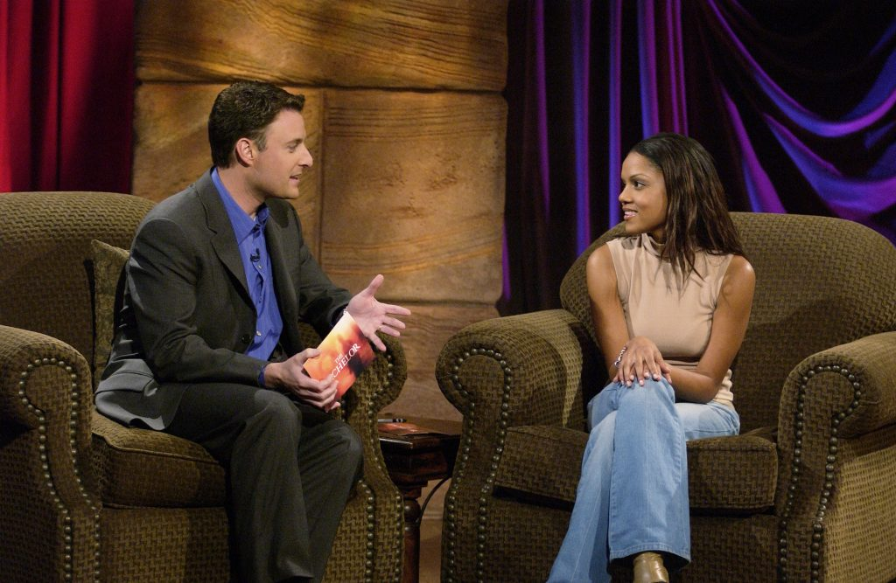
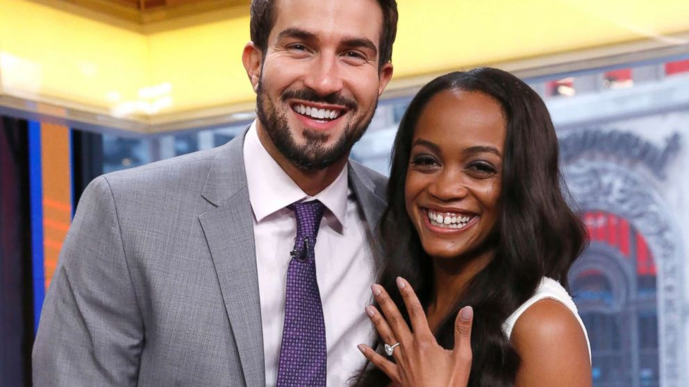
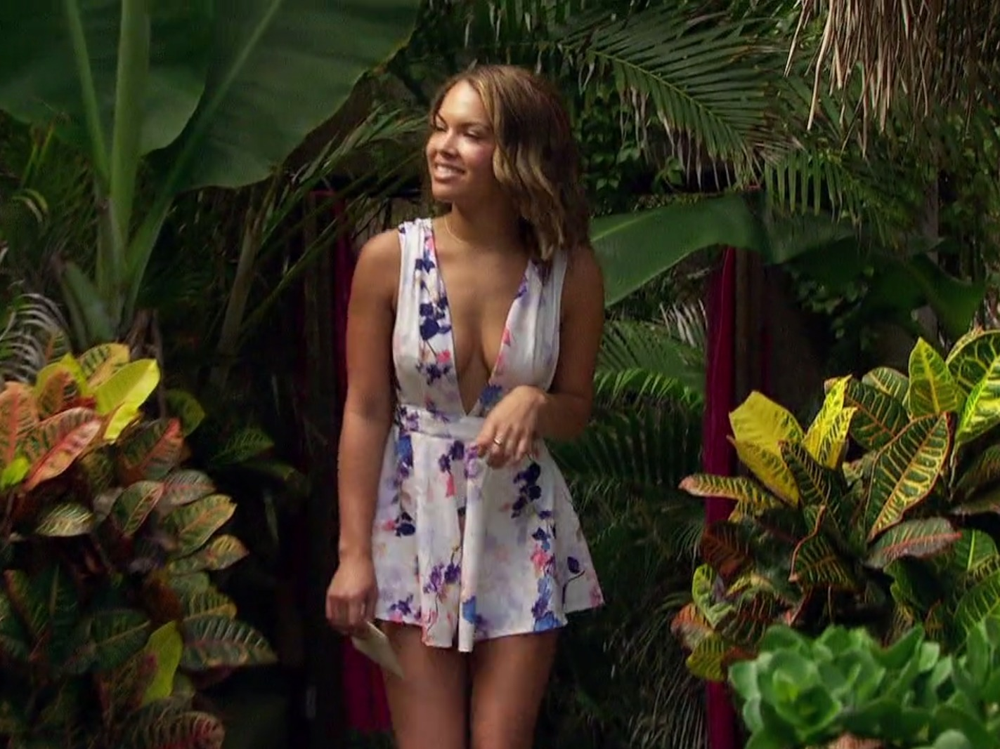
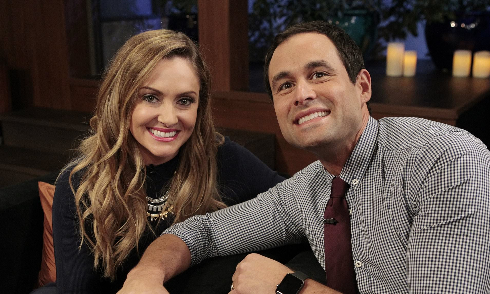

Bachelor Diversity
Racism and the race for love
by Emma Gray and Claire Fallon
10.12.20
Introduction
It’s no secret that “The Bachelor” franchise, the gold standard for reality dating TV shows, has a big race problem. “The Bachelor,” which has aired on ABC since 2002, along with popular spin-off shows, “The Bachelorette” and “Bachelor In Paradise,” is best known for a vision of overwhelmingly white, heteropatriarchal marital love that it sells to its cast and its millions of viewers.
The franchise’s viewers and cast members skew white. In 2012, the show’s diversity issues came to a head when a group of Black men filed a class action lawsuit against “The Bachelor,” claiming that the franchise’s casting practices violated civil rights law that “plainly prohibits whites from refusing to contract with African Americans because of their race.” (The suit was ultimately dismissed on the basis of the First Amendment.) Even so, “The Bachelor” waited another five years — 15 years since its start — to cast its first Black Bachelorette. Three years later, after nationwide protests against racism and police brutality erupted this summer, they finally announced the casting of a Black Bachelor, Matt James. His season is currently filming.
For most of the show’s history, its production team and network remained largely silent on the issue, offering bland excuses for the ongoing failure of the show to cast more diversely when pressed in interviews. But in the midst of a summer of racial reckoning, which prompted members of Bachelor Nation — fans and former cast members alike — to put together an entire social media campaign to push the franchise to make concrete commitments on diversity and inclusion, the production team was finally forced to put out a statement in June. They admitted their “responsibility for the lack of representation of people of color on our franchise,” and pledged “to make significant changes” by “taking positive steps to expand diversity in our cast, in our staff, and most importantly, in the relationships that we show on television.” Just two weeks ago, the official Bachelor Nation Instagram account announced it would be banning racist, bullying, abusive comments about cast members.
As Bachelor Nation pushed for more racial diversity and equity on screen and COVID-19 prevented the filming of its usual summer shows, “The Bachelorette” and “Bachelor in Paradise,” the franchise aired a throwback recap series called “The Bachelor: The Greatest Seasons — Ever!” The move inadvertently served as a reminder of the homogeneity of many past seasons, and the uncomfortable environment faced by Black contestants and other contestants of color.
Amid all this, we wanted to hear from former cast members of color. They saw the show’s race issues firsthand and have been among the most vocal voices pushing for change from within. For HuffPost’s “Bachelor” podcast, “Here to Make Friends,” we interviewed 12 former cast members who appeared on “The Bachelor” or “The Bachelorette” between 2002 and 2017 about their experiences with the franchise and what role race played.
Chapter One
Casting
Racial diversity in casting has varied over the years. LaNease Adams, a Black woman, was one of the final six contestants in the show’s inaugural, six-episode season starring Alex Michel. In the ensuing years, some seasons featured all-white casts, and contestants of color rarely made it past the early episodes. The 2012 class action lawsuit spearheaded by two Black men against ABC and Warner Horizon TV was ultimately dismissed, but it did move the needle on the public dialogue surrounding the franchise’s whiteness. In the next season produced after the lawsuit, season 17 starring Sean Lowe, there was a notable increase in BIPOC contestants, including Robyn Howard Jedkins and Leslie Hughes.
LaNease Adams, season 1 of “The Bachelor”: “I got a phone call [from a casting agent] saying, ‘Hey, LaNease we think you would be great for this new show, go down there and do an interview.’ So I went down there, I interviewed with casting and it all went so fast. I think within three weeks I was taping.”
Lanease Adams, speaking here with franchise host Chris Harrison, was part of the franchise's first kiss. (Source: Cheatsheet.com)
Leslie Hughes, season 17 of “The Bachelor”: “My process was really easy and quick. ... When I did get that phone call of, ‘Oh, I’m going on The Bachelor,’ the first person I called was my father because there were no people like me, of color, on [the show]. He was like, ‘Yeah! You’re gonna be one on there!’ And then I get there and then there’s like five of us or seven of us.”
Robyn Jedkins, season 17 of “The Bachelor”: “Honestly my thought process was I would go for a day, and they’d kick me off ’cause they always have one token Black girl.”
Grant Kemp, season 12 of “The Bachelorette”: “I think that they were lacking a lot of Black guys on the show, and they saw my application, and from a marketing standpoint, they were like, we gotta go with this guy. I think that’s why I got a call back so quick. I think they were like, damn, this guy, he’s a model, he’s a firefighter. He counts as Black, but he’s not super Black. I feel like that’s kind of the vibe they got off me. And so that’s why I got cast for the show over a guy that would speak like your typical Black guy, or is a little more Black than me or whatever.”
Taylor Nolan, season 21 of “The Bachelor”: “There definitely was emphasis on the fact that I’m biracial, and that I’m Black and white, during the casting process.”
Sharleen Joynt, season 18 of “The Bachelor”: “When I flew out to Los Angeles ... one of the executive producers said to me, ‘We’re so happy this worked out. We weren’t sure if you were going to back out,’ and I was like, ‘What? You don’t have another half-Asian opera singer waiting in the wings?’ And he laughed pretty hard at that, but it’s true. There’s not a lot of people that aren’t white.”
Robyn Jedkins: “The whole team was white. I don’t think there was a single [person of color], not even Asian, Hispanic, nothing. I don’t think there was a single one.”
Rachel Lindsay, season 21 of “The Bachelor” (contestant) and season 13 of “The Bachelorette” (lead): “None of my friends watched [‘The Bachelor’ or ‘The Bachelorette’]. We all tolerated it. We all knew what the problem was. And we laughed. It was a joke that the show wasn’t for people of color, but we just learned to tolerate it and to watch something else.”
Chapter Two
The Weight of Expectations: On Being the First
Since the show’s premiere, the vast majority of Bachelor leads, winners and most successful contestants have been white. Bachelor producers and executives have sometimes argued that it’s difficult to find Black people who want to be cast on the show — which, if true, must be attributed to the rare and often negative portrayals of Black people in the franchise. In 2017, Rachel Lindsay, an attorney and fan favorite from season 21 of “The Bachelor,” was chosen as the franchise’s first Black lead. Previously, the show had also cast a Latino Bachelor, Juan Pablo Galavis, in 2013 and Jewish leads Jason Mesnick and Andi Dorfman in 2009 and 2014, respectively.
Rachel Lindsay: “I’ve underestimated a lot when it comes to the franchise, even how big of a deal it was that I was the first Black Bachelorette, because I didn’t watch the show before. I didn’t know what Bachelor Nation was. I didn’t know how deep it was. I didn’t know that it would have such a big impact.”
Rachel Lindsay chose husband Bryan Abasolo at the end of her Bachelorette season. (Source: ABC News)
Robyn Jedkins: “Black women, women of color, like to say, ‘Why would you go on that show? Why would you do that, knowing what they stand for?’”
Jason Mesnick, season 4 of “The Bachelorette” (contestant) and season 13 of “The Bachelor” (lead): “They were considering other people, obviously, for the Bachelor, and I kept on saying, why haven’t they made a decision yet? As a network, ABC is always conscious of their advertisers. Because I had a Jewish background, they were saying, ‘We don’t know if America’s ready for that type of thing.’”
Rachel Lindsay: “I thought, wow, I’m the first and they’re doing it. This is going to be the first of many firsts. They’re going to start diversifying the cast. I’m going to be able to attract a diverse audience. I just thought that my voice and my presence would make a huge difference.”
Chapter Three
Meeting the Lead and Other Contestants
Some contestants of color enter the Bachelor mansion knowing what to expect — a mostly white cast, being handled by a mostly, if not entirely, white production team. Others go in with less context. As they meet the lead and other contestants, they often confront questions of tokenization and interracial romance before the drama has even begun.
Kupah James, season 11 of “The Bachelorette”: “On the show the first night, there were three or four brothers. We all did the brother head nod, you know —”
Jonathan Holloway, season 11 of “The Bachelorette”: “A little shake, like, I see you. I see you over there.”
Sharleen Joynt: “I remember talking to one contestant [during taping] and based on what we discussed, she made an assumption that I was from China. I was shocked. I was beside myself. It was such a leap, based on my accent and my behavior. But it made me realize very early on how I was seen by other women in my age range and who I felt similar to culturally, but maybe wasn’t.”
Amber James, seasons 19 and 20 of “The Bachelor”: “With Chris Soules, I was the only Black girl on his season, and I swear they kept me because they wanted a little bit more diversity. I remember I was like, ‘I’m ready to go,’ like, night one. I’m like, ‘This guy is not for me. He can’t even make sentences. I’m over this.’ And they’re just like, ‘You can just stay on a little bit longer.’”
LaNease Adams: “Alex [Michel] and I happened to get along and, and I date white men. So it worked. If the Bachelor or Bachelorette is white and they don’t typically date outside of their race, why would it make sense to have a bunch of people [on the show] that they wouldn’t even have chemistry with?”
Robyn Jedkins: “I truly believe Sean [Lowe] didn’t care [about race]. I think they chose the best Bachelor to date all types of women. But I think at the same time, there were a lot more African Americans for our season because of the [racial discrimination] lawsuit.”
Chapter Four
How Production Shapes the Narrative
Most reality TV fans are aware that while shows like “The Bachelor” aren’t scripted, they are heavily manipulated by producers and may be misleadingly edited in post-production. Producers are on the lookout for people to play up as villains and heroes, among other archetypes. BIPOC contestants may be nudged into racialized tropes, like the angry Black man or the sexualized Latina woman by producer interference and editorial decisions. Black contestants we spoke to recall being pressured to talk about race on camera, and being placed in conflict with each other or with white women whom the average Bachelor viewer might find more relatable.
Robyn Jedkins: “The producers definitely pushed me to ask Sean, like, ‘I’m Black and have you ever dated someone that’s Black?’ I remember asking him, but I don’t genuinely remember listening to his answer. I remember him saying, ‘Oh yeah, I’ve dated a Black girl before.’ And I knew he had dated a Black cheerleader. I think that’s part of the reason they picked me. I was a cheerleader. I was Black. I fit the mold. I 100% think it was a layup for Sean. I truly believe Sean is a good guy. But I do think it was to make him not look racist.”
LaNease Adams: “The producers are the ones who asked me to ask Alex [about interracial dating] because I actually didn’t want to bring it up. I never thought to talk about it, but it is an important conversation. So I did ask him and he said he was totally cool with it. It was a kind of weird conversation for me to have. We’re at a dinner party, we’re all drinking. ‘Tell me about your experience with interracial dating.’ It was really strange. And that was the night I went home too. So I was like, was it that gosh darn conversation about interracial dating?”
Taylor Nolan and Kupah James recalled being pushed into the “angry” or “aggressive” person of color role: James, during his exit from Kaitlyn Bristowe’s season of “The Bachelorette,” and Nolan during her prolonged conflict with Corinne Olympios, a white, blonde contestant who was beloved by much of the audience but who had issues with many women on Nick Viall’s season of “The Bachelor.”
Taylor Nolan: “It felt like it was the same old, same old, because there was someone there like Corinne who was getting positively reinforced. I think [at the time] I didn’t want to acknowledge that race played a part in it. But it 100% did. From my intro, they had me talking about my race.”
After asking Kaitlyn Bristowe whether she was genuinely interested in him or whether he was “filling a quota,” James was sent home before a rose ceremony. During his combative exit interview, he shouted at producers, “I think your process works for some people, like Jared [Haibon] and ‘Cupcake’ [Chris Strandburg], you know what I’m saying? But not me ... Just ask me the questions and let me go home, dude!”
Kupah James: “[When I was sent home], they were trying to get me to say, ‘Do I think I’m going home because I’m a minority?’ And I don’t really play that card in my life. I don’t play the Black card often or ever. I was trying to control it in my own way. I [didn’t] want to come across to people like this stereotypical Black guy. They kept asking me, ‘Do you think it’s because you’re Black?’ And I was like, ‘It’s not because of that. Stop asking me that question.’ And they kept asking, and then I lost my temper.”
Nolan and Olympios’ conflict reached a peak when Nolan told Olympios that she wasn’t very “emotionally intelligent,” which led production to place the two of them on a two-on-one date. Ultimately, Nolan was sent home in favor of Olympios.
Taylor Nolan: “I think that most of the fan base saw themselves in [Corinne]. And regardless of if they disagreed with her or not, they didn’t find me to be relatable. Which is valid. But you literally have filming [during] the 2016 election. And then in her ITM [an in-the-moment, or a straight-to-camera interview with a producer during filming], she says ‘No votes for Taylor, Make America Corinne Again.’ If race hadn’t played a part [before], at that point it sure fucking did.”
Rachel Lindsay: “If you have a certain audience that isn’t used to being around people of color, and then this is what they see on television, an angry Black woman — a woman who isn’t cursing, who isn’t raising her voice, but is asked on stage, ‘Why is she so angry?’ to play into a stereotype of the angry Black female? That is a problem.”
Another notable conflict, which occurred during the Women Tell All reunion special of Ben Higgins’ season of “The Bachelor,” was between Amber James and Jami Letain — two biracial women — and Jubilee Sharpe, who was born in Haiti. James and Letain alleged that Sharpe had made comments suggesting that she was the only “real” or “full” Black girl on the show. The contentious back-and-forth that resulted drew negative attention to all three women.
Jami Letain, season 20 of “The Bachelor”: “There are moments in the house that I remember [Jubilee Sharpe] would say the n-word to me, which is her prerogative. I personally don’t believe that anyone should really say the word. However, if you’re a Black person, you understand where that word comes from. I get it. I finally just started being like, ‘Come on girl, we don’t really need this. We don’t really need that edit if they did show it.’”
Jami Letain went on to appear on spin-off Bachelor in Paradise. (Source: Pradux)
Amber James: “When we were on Women Tell All, [production] actually asked us to bring that up [to Jubilee]. And I had talked to Jubilee right before going on Women Tell All and was like, ‘Are we good?’ We were showing each other, like, ‘What dress are you wearing?’ We were fine.”
Jami Letain: “Obviously now I recognize that Women Tell All wasn’t a great place to air out [our conflict with Jubilee] because it looked like Amber and I were against her and it was 100% not the case. After the Women Tell All special aired, Amber and I got severely cyber bullied. I was called a racist for simply stating, ‘You can’t say “I’m the only real Black girl here” when there’s more of us.’ They set it up where it looked like we didn’t have each other’s backs. It looked like we were the half-Black girls versus the real Black girl. And [that] was so not the case. It was so upsetting to see that edit. When it comes to something as serious as race and pitting different shades of Black women against each other, that is not OK.”
Amber James: “Especially back four years ago, let’s just say, Taylor wasn’t on yet. Rachel wasn’t the Bachelorette yet. So I guarantee if we would have spoken up like that, it would have just been pushed underneath the rug.”
Chapter Five
Scrubbing Diversity
When race is addressed at all on “The Bachelor,” it’s often done with a heavy hand and little nuance. However, former contestants said that, for the most part, a flattened norm of whiteness was projected. This meant that conversations about racial identity and politics were largely limited or left on the cutting room floor, and that more invisible forms of diversity went unacknowledged. For example, Mesnick is a white Jew and Galavis is white-presenting, and both were folded into the show’s undercurrent of Christian whiteness whenever possible.
Jami Letain: “In the house we never really had conversations about race. They don’t really let you have conversations about anyone other than the Bachelor. Like we’d be talking about McDonald’s and they’d be like, ‘Well, do you think Ben [Higgins] likes this?’”
Sharleen Joynt: “For how willing they were to shout from the rooftops that they cast their first Latino bachelor, the lack of interest in [Galavis’] actual culture was pretty astounding. He has an entire vocabulary and an entire way of speaking and an entire way of expressing himself [in Spanish, his first language], and he never had the opportunity to, except as a novelty.”
Jason Mesnick: “I wouldn’t say [my family is] religious, but the Jewish religion, culture-type stuff does come up every once in a while. And it completely was taken out [of the show]. We filmed a bunch of Jewish things. And everything was cut out. I’m like, wait a second! Let’s spin some dreidels!”
Sharleen Joynt: “Lucy, the ‘free Spirit’ from my season, chimed in to say, ‘I spoke in Spanish with Juan Pablo the majority of my scenes, and none of that was shown.’ Spanish is her first language. You would never know that.”
Jason Mesnick: “We were even talking about breaking the glass at our [Molly and Jason’s televised] wedding, and [the producers said], ‘Oh, you know, we don’t know about that.’ And I’m like, what? Hava Nagila and breaking the glass, that’s the cool stuff!”
Jason Mesnick chose wife Molly Malaney at the end of his Bachelor season. (Source:Daily Mail UK)
Taylor Nolan: “It felt like, okay, there’s diversity here, but none of us, other than Rachel [Lindsay], are getting actual storylines, actually getting dates, actually getting attention. It still kind of seemed like [we were] filler because whiteness was being centered.”
Kupah James: “I think there should be more producers in positions of power that are minorities and diverse because I think that way it will trickle down.”
Grant Kemp: “Most of the activities and the themes of what you do on the show are pretty white.”
Kupah James: “Until you get some more hip-hop dates, some more urban areas, some more activities that seem more cultural, you’re going to keep seeing what you saw.”
Chapter Six
The Post-Show Fallout: How Do You Feel Now?
For most Bachelor contestants, the real test comes after filming ends and the show begins airing. It is during that time that some find themselves famous overnight, and thus facing a hefty onslaught of criticism — often racist commentary — from viewers, which can be incredibly traumatizing. No one we spoke to said that they regretted doing the show, and many said that the experience was ultimately positive. But some said that the franchise could have done more to prepare them for the post-show response and help them through it — and that the show could do more to support former cast members who try to speak out about racism in the franchise.
Kupah James: “They could have done us a little more justice and helped us out after the show, knowing they don’t do us right. But they don’t do that. They literally kick you out and you’re on the street and they’re like, ‘Figure it the fuck out.’”
Jonathan Holloway: “I always joked, ‘Hey, choose me as the next Bachelor. I’m here, I’m ready for it, I’ll accept it.’ I always joked with the producers, and they’re like, ‘hahaha.’ I think it was more of a, ‘haha, yeah, not really.’ But I guess I understood that demographic that they were going for. The show is geared towards middle-aged Caucasians and younger women that are looking for that fantasy, I guess you could say. It’s not necessarily geared toward the minority.”
LaNease Adams: “Being the first kiss [of the franchise] and it being interracial wasn’t a big deal to me because I grew up in L.A. My best friends were white growing up. I dated mostly white guys. It was like nothing. [After], I found a picture of us kissing on a racist website. It was scary. I was like, I’ve never hurt anybody. I’m just a normal human being that had a kiss. That was scary and helped send me onto the onslaught of depression. You wake up one morning, you go outside and your life has changed. And then you’re online and people are like, ‘Who the hell does she think she is? This Black girl thinks she can date the Bachelor.’”
Kupah James: “I was hurt for a while. I struggled for the better part of a year. Every conversation was me whining about how they manipulated me, because I felt guilty because I was drunk and I gave it to them. But they made me look exactly like what I never try to be, which is an angry minority on camera. And I really, really resent them for that.”
LaNease Adams: “After the show I went to talk to [founding producer] Lisa Levenson. I was losing weight really fast because I wasn’t eating. I was self-medicating. Lisa suggested that I talk to the [show’s] therapist, but I was just checked out. I couldn’t get myself together to even go talk to somebody at that point. I didn’t want to do anything. I just wanted to hide.”
"They don’t expand their thinking, their horizon, their experiences. They keep it comfortable."
Kupah James: “I don’t regret the show. I’m just disappointed in the production because the production has a lot of power and they could save some of us. They can provide therapy, they can provide assistance, they can help with our business. They could do so much. That would cost them so little. And they do nothing.”
LaNease Adams: “All the work that I did to get through that period of my life is work that I would have had to do, whether it was because I was on ‘The Bachelor’ or because something else in my life happened. We’re going to have to fix parts of ourselves that need to be developed. Mine just happened to come from a reality show. I’m glad the show is still on and I’m glad to have been a part of the legacy.”
Rachel Lindsay: “This audience isn’t used to seeing people of color. That is why you have fans of [former Bachelorette] Hannah Brown that come to me and are mad at me for holding her accountable for saying a derogatory word. They feel as if they can speak to me in that way, because they are only surrounding themselves with this type of culture. And ‘The Bachelor’ plays into that. They don’t challenge [their audience]. They don’t expand their thinking, their horizon, their experiences. They keep it comfortable. [Some] people watch the show because it caters to the world that they know.”
Sharleen Joynt: “Sometimes there’s some drama going on in Bachelor Nation and someone said something they shouldn’t have said, and there’s all this bullshit. And like, part of me just wants to go for a walk in the park with my husband and not care about some 23-year-old who said the n-word. But at the same time, there’s almost this responsibility to say something when you went on the show once and you are a person of color. And sometimes it’s exhausting.”
Rachel Lindsay: “I feel almost like it’s my duty [to speak up about Bachelor Nation racism]. It’s my responsibility. I think what I’ve learned in the last three years since I’ve been the lead is that it can’t just be me and I can’t be alone in this.”
Chapter Seven
The Futurer of the Franchise
As Americans were in lockdown, a wave of Black Lives Matter protests erupted over the summer. They spurred a renewed racial reckoning across industries, and “The Bachelor” was not immune. Fans who had long called for better representation behind and in front of the camera began organizing in earnest, culminating with a Bachelor Diversity campaign and petition that collected 163,000 signatures. A former casting producer also spoke out publicly about the show’s discriminatory, overwhelmingly white environment on the production side. The show quickly announced that Matt James, best friend of popular former contestant Tyler Cameron, would be the franchise’s first Black Bachelor. Shortly after, it was leaked that the next Bachelorette, Clare Crawley, who is Latina, would be leaving her season partway through and would be replaced with Black former contestant Tayshia Adams.
Rachel Lindsay: “I am happy that there is a Black [Bachelor] that has been announced, but the rollout of it, watching it all go down on ‘Good Morning America,’ even the way they described [Matt James], all of it is just a huge red flag. … You introduce him to the world as Tyler Cameron and Hannah Brown’s best friend. I mean, come on …‘He’s Black and he’s best friends with the two most popular people in the franchise.’ Come on guys.”
Amber James: “I almost think that they’re doing it just to cover their butts. I mean, we had to write a freaking petition.”
Kupah James: “To me, it’s like, you’re doing it because you kind of have to, so you get no props from me. They could have done better with their Black cast members over the last 10 years.”
Robyn Jedkins: “ABC has the control and the power.”
Jami Letain: “When you look at Nick [Viall] on his seasons, people despised him. And then they made him the Bachelor and somehow people were freaking out. You have the power to reshape how people think about somebody. So why wouldn’t you take advantage of having that power and try and create a beautiful storyline for a beautiful Black man or Black woman?”
Leslie Hughes: “I think they need to start over and focus on a whole mix of people. Like, there’s not a lot of Asians on the show either. There’s not diversity. [‘The Bachelor’ has] the power to make a difference. There’s so many viewers. I hope they do it, but I feel like they won’t. I feel like this is another thing they’re just gonna brush off.”
"I want to say that I took a stance of saying, I no longer want to be affiliated with a franchise who is part of the problem."
Rachel Lindsay: “There is systemic racism within the franchise. It’s deep-rooted. It’s structural, it’s internal. And there have to be changes that are made from within. It doesn’t mean that you put a Band-Aid over it. It means that you’re actually hearing what we’re saying. We want to feel as people of color included in this franchise, we want to feel valued. We want to feel recognized. And that means talking to someone in an ITM that looks like me. That means when you come into casting, you’re meeting a producer who understands you, maybe understands your hesitation and your fear of how you may be represented on camera in this franchise.”
Taylor Nolan: “I think that the way that the show takes steps, quote unquote, ‘forward’ is just very different from what we would like it to look like. And I guess maybe I’m just a bit pessimistic that they will ever step up to do things in the way that we are saying we would like them to.”
Rachel Lindsay: “I no longer want to be affiliated with something who isn’t on the right side of this. When we write about this in the history books, when we tell our children, our grandchildren, about 2020, where can you say that you stood? What type of stance did you make? I want to say that I took a stance of saying, I no longer want to be affiliated with a franchise who is part of the problem.”
These interviews have been edited and condensed for clarity. All interviews originally appeared on episodes of HuffPost’s “Bachelor” podcast “Here to Make Friends.” Listen to the full episodes on Acast or wherever you get your podcasts.